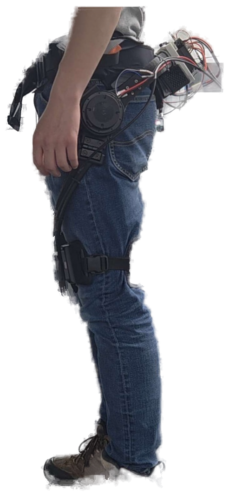
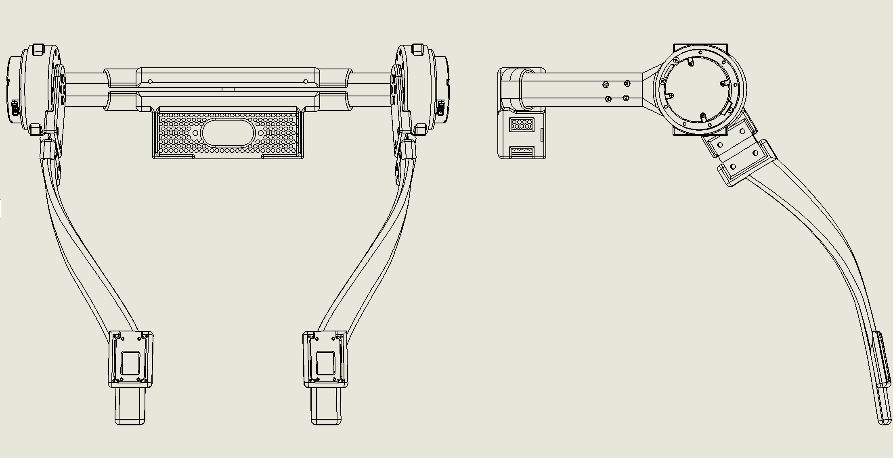
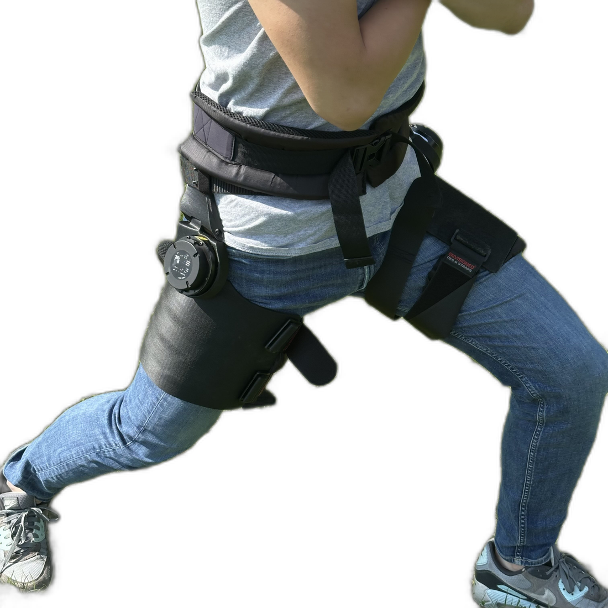
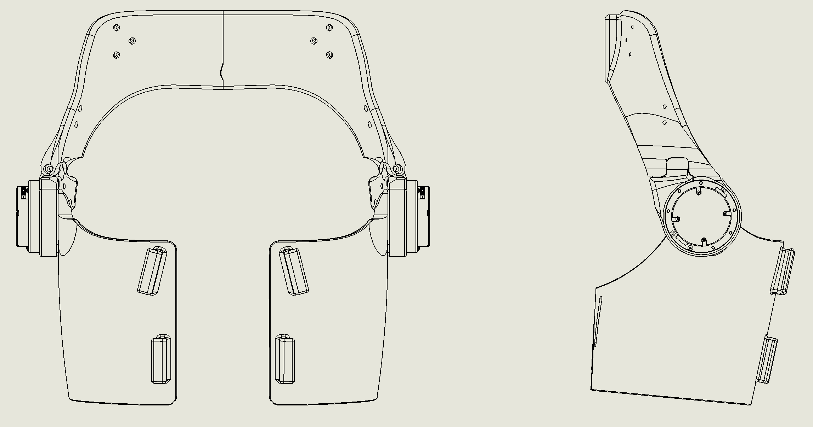
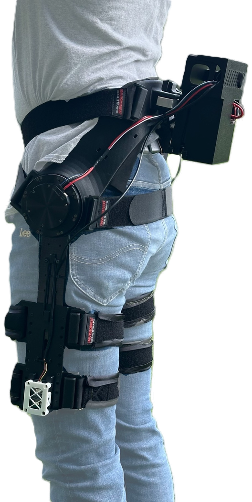
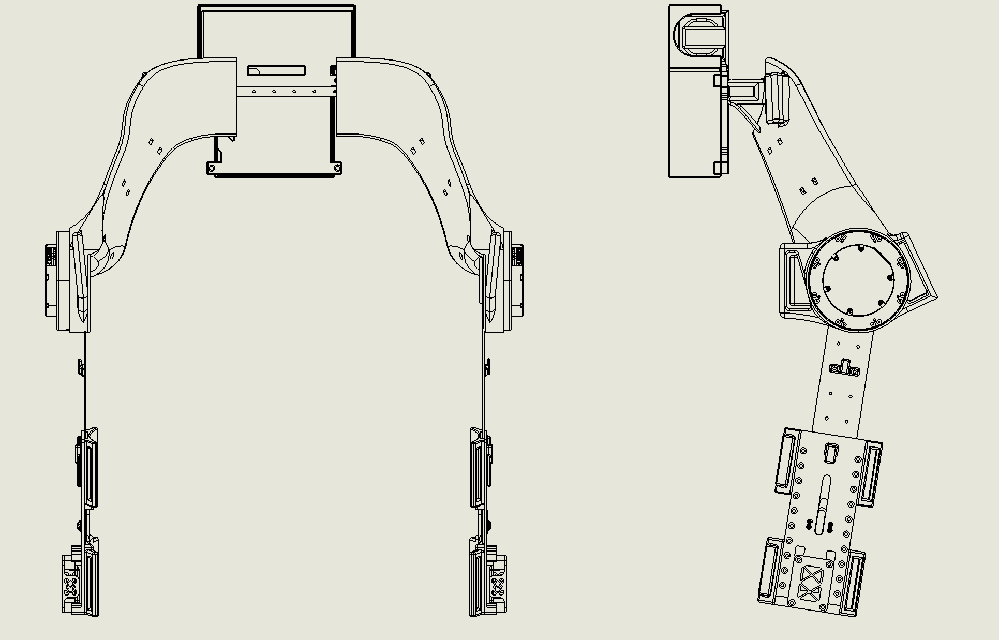
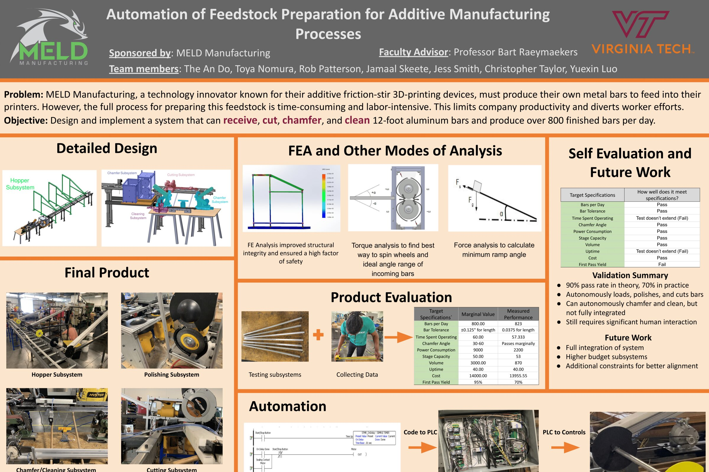

Record II & III — Service Record
Work Experience
Currently leading hip exoskeleton design at CMU's Metamobility Lab, told in phases — failures and iterations included, not just the outcome. Earlier work and undergraduate projects are folded below if you want the fuller history.
Hip Exoskeleton
Active — Sep 2025–PresentLead Designer · Metamobility Lab, Carnegie Mellon University
The question underneath all three generations below: could a lighter, lower-torque exoskeleton design deliver more metabolic benefit than a heavier, higher-torque one?
Most of what follows has the same shape: a first guess that turned out wrong, and the real cause underneath it. Struck-through items below are the wrong guesses — click one to jump to that part of the story.
Before touching hardware: two months cleaning up an existing PhD student's control codebase — unglamorous, undocumented work, but it's how I got embedded in the project in the first place.
Mark I
The Reverse-Engineered Conversion

Is Lightweight Actually Better?
What I did
- Reverse-engineered and converted a 2.5kg commercial exoskeleton to run our own motor and electronics
- Suspected overheating PLA → real cause was an unmountable driver board, fixed with a custom shadow-casting rig
- Assumed it was just hinge strength → FEA proved torsional load from the thigh interface was the real driver, and reshaped it accordingly
- Recorded this lab's first-ever measurable metabolic benefit
Carried Forward

- Motor rocking under load — three hinge designs failed in sequence→ Mark II
Read the full build

Is Lightweight Actually Better?
- Reverse-engineered and converted a 2.5kg commercial exoskeleton to run our own motor and electronics
- Suspected overheating PLA → real cause was an unmountable driver board, fixed with a custom shadow-casting rig
- Assumed it was just hinge strength → FEA proved torsional load from the thigh interface was the real driver, and reshaped it accordingly
- Recorded this lab's first-ever measurable metabolic benefit

- Motor rocking under load — three hinge designs failed in sequence→ Mark II
Feasibility — Commercial Teardown, Conversion & First Validation
Papers using the Samsung GEM exoskeleton suggested a lighter, lower-torque design could deliver more metabolic benefit than a heavier, higher-torque one. Hypershell's commercial device weighs just 2.5kg without batteries — light enough that testing this hypothesis, before committing the lab to a full from-scratch build, seemed worth doing first.
I designed an adaptor to mount our own motor and a custom PCB (mounted on top of the Jetson) onto the Hypershell structure, while reverse-engineering the device itself from the physical object — no manufacturer CAD or drawings existed, and Hypershell's thigh interface has an unusually complex curvature that made the reconstruction hard.
Chasing a flickering reading
During testing, the motor encoder reading was intermittent — good sometimes, bad other times. My first hypothesis was the mounting material: the lab was using PLA at the time, which deforms under motor heat, so I respecified it to PAHT-CF. The reading was still bad. The real cause turned out to be that the driver board couldn't be bolted down without matching the commercial unit's own hole pattern, which no drawings existed for either — solved with a custom shadow-casting rig, projecting the part at a larger scale to measure the hole coordinates on a lathe. About two weeks of work in total.
With a reliable reading, I ran a metabolic test on the converted device: a 1% reduction versus no exoskeleton, single subject — modest, but the first measurable metabolic benefit this lab had produced. The past student's device hadn't shown one. That result was enough for our PI to commit to a full reverse-engineering of the device.
Media
Full Reverse-Engineering — Three Suspects, One Culprit
Full reverse-engineering began at speed — I wanted a testable result fast, so I started with whatever was quick and cheap, evaluated it, and moved on when it failed. My CAD ended up visually near-identical to the commercial original, built entirely from measurement since no manufacturer drawings existed. Our 3D printer was too small for the full-scale parts, so I redesigned around that constraint while keeping the structure intact.
When motor rocking showed up under load, I had three suspects and worked all three at once: the pelvis interface, insufficient thigh contact, and the hinge.
The pelvis interface
Hypershell's own pelvis part sits on top of the glutes rather than the lower back, which I suspected made it inherently less secure. I tried several back-plate drafts — deliberately cheap, fit-check only, never load-tested for torque — but none fit perfectly. This thread stayed open through the end of Mark I.
The thigh interface
I proposed adding high-thigh straps for more contact area, reasoning more contact would reduce rocking. My PI disagreed — more strapping is less comfortable and widens the gait — and while I wasn't fully convinced, I dropped this thread rather than resolve the disagreement at the time.
Hinge failures
The hinge looked like the fastest fix, so it got most of my attention. The door hinge already in place had gaps both between the pin and leaf and leaf-to-leaf. A quick plastic hinge sourced off Amazon didn't endure even 12 N·m. That failure pointed me toward a new hypothesis — that the thigh interface's unusual curvature was driving outsized torsional force into the hinge — and I guided an undergrad through an FEA study to test it. His analysis, based on principal stress theory (σ1,2 = (σx+σy)/2 ± √(((σx−σy)/2)² + τxy²)), showed that because the shear/torsional term is squared, torsional loading dominates far more than plane stress — so the fix was geometric: move the curved part of the thigh interface further up the leg. I adopted the change.
Meanwhile, a McMaster metal hinge held to 12 N·m but rocked worse than the plastic one, from the same leaf/pin gap problem. I modified it myself — dowel pins, redrilled holes, shims — which fixed the wobble and pushed it to 15 N·m, where it broke. Three off-the-shelf hinges, three separate workarounds, still failing: that's what convinced me to design a custom hinge from scratch instead.
Media
Ends this generation at 3.1kg, down from the prior student's 4.2kg (both with battery).
Mark II
The Custom-Fit Redesign

Stop Chasing Fit-Everyone. Build One That Works.
What I did
- Abandoned "fits everyone" to focus entirely on one working system — surfaced my own body in SolidWorks to build a Georgia-Tech-inspired, ergonomic pelvis interface
- Eliminated hinge wobble at its source by building the pelvis interface with no separate ABAD hinge at all
- Overrode my PI's comfort objection to test a tightly-fitted thigh cuff, reasoning through why rocking amplifies farther from the motor
- Turned a requested quick-release motor connector into a custom shoulder-bolt hinge — eliminating rocking entirely, up to 17 N·m
Carried Forward

- Fits one body only — mine — not yet generalized→ Mark III
- Motor doesn't sit flush on the non-flat pelvis surface→ Mark III
Read the full build

Stop Chasing Fit-Everyone. Build One That Works.
- Abandoned "fits everyone" to focus entirely on one working system — surfaced my own body in SolidWorks to build a Georgia-Tech-inspired, ergonomic pelvis interface
- Eliminated hinge wobble at its source by building the pelvis interface with no separate ABAD hinge at all
- Overrode my PI's comfort objection to test a tightly-fitted thigh cuff, reasoning through why rocking amplifies farther from the motor
- Turned a requested quick-release motor connector into a custom shoulder-bolt hinge — eliminating rocking entirely, up to 17 N·m

- Fits one body only — mine — not yet generalized→ Mark III
- Motor doesn't sit flush on the non-flat pelvis surface→ Mark III
The Pivot — Building for One Body, Not Everyone
By the end of Mark I it was already April — seven months into the project — and I still didn't have a system working at high torque. I concluded the block-like pelvis design simply didn't fit well across different people, while Georgia Tech's more ergonomic approach looked promising: more pelvis contact points, better support. Test prints confirmed it fit well, and I committed to a Georgia-Tech-inspired pelvis interface from that point on.
I also made a deliberate scope cut: stop trying to fit everyone, and focus entirely on getting one working system — on myself. That meant abandoning some Mark I generalization work, like an extendable pelvis meant to fit a range of hip widths.
Building the ergonomic pelvis
With no body-scanning equipment available, I measured myself the old-fashioned way — circumference and midpoint-to-endpoint distances across the upper thigh, hip, and lower back — and used SolidWorks surfacing tools to reconstruct a model of my own pelvis, glutes, and thigh region from those measurements, then built the pelvis interface directly off that surface, crediting Georgia Tech's device design for the underlying approach. It fit me perfectly. It also surfaced a new problem: the resulting body-facing surface isn't flat, but the motor needs to sit flush on the sagittal plane or it delivers torque at an angle. Not severe enough to block progress yet — I didn't solve it until Mark III.
Eliminating the hinge
Motor rocking still hadn't gone away, even with a good pelvis fit. Having already lost faith in off-the-shelf hinges, I built the ABAD joint directly into the pelvis interface with no separate hinge at all, which eliminated hinge wobble as a variable outright. (Every ABAD hinge through Mark I had sat below the motor — this was the first time the joint moved close to it.)
Still Rocking — The Thigh Interface and a Custom Hinge
Why distance from the motor matters
Rocking still persisted, which sent me back to the thigh interface as the last suspect. I think of it as a link–motor–link problem: secure both far ends of a link and the motor in between has room to rock; secure the link close to the motor instead, and it should rock less. Two things likely explain why. Any small angular play at a loose joint — a sloppy pin, an under-constrained contact — produces a linear displacement proportional to how far that joint is from the point you're watching, the same reason a wrench wobbles more at the far end of the handle than right at a loose bolt head. And if the structure itself flexes rather than just having play, cantilever-beam deflection under load scales with the cube of the distance from its support, so a compliant joint far from the motor bends disproportionately more than one close to it. Either way, constraining the far ends of the assembly — a good pelvis fit alone — wasn't enough; what mattered was constraining something close to the motor.
I decided to test the high-contact thigh idea from Mark I anyway, my PI's earlier gait concerns notwithstanding. Using the same measure-and-surface method as the pelvis, I built a tightly-fitted thigh cuff leaving almost no gap against my leg.
Separately, my PI wanted the motor to be easy to attach and detach so it could be swapped across interfaces. I designed a removable hip-joint–pelvis connector for this — a shoulder bolt through the top of the motor that unscrews to remove the motor and hip-joint interface as a unit. That led directly to the idea that finally solved the hinge problem: since it already needed to be a shoulder bolt, swapping in one with a bushing turns the same fastener into a purpose-built hinge, solving the modularity request and the hinge problem with one part.
Tested in one attempt: no motor rocking at all, up to 17 N·m.
Media
The Weight Trade-off
Solving the rocking issue brought the weight back up from 3.1kg to around 4kg — a byproduct of building tightly-fitted, integrated parts (the hingeless pelvis, the custom shoulder-bolt hinge, the close-contact thigh cuff) rather than a purely weight-optimized structure. I'm treating that honestly as a trade-off, not a regression. This is also a device custom-fit to one body — my own — which is its own limitation, and the subject of Mark III.
Mark III
The Generalized Interface

Mature Enough to Ask a Harder Question
What I did
- Generalized the pelvis interface to a movable design fitting a range of body sizes across the lab, after handing hardware leadership to a PhD student
- Solved a resurfaced Mark II problem — the motor digging into the pelvis bone — by offsetting the motor for clearance
- Replaced the ABAD hinge entirely with a flexing carbon-fiber sheet, closing out two generations of hinge failures for good
- Ran a 3-subject pilot metabolic test at ~10 N·m that validated the project's founding hypothesis
Moving Forward

- The calf cuff transmits torque best, the straight bar weighs least — testing whether a partial cuff, just the third closest to the motor, can hit the sweet spot between them→ Next study
Read the full build

Mature Enough to Ask a Harder Question
- Generalized the pelvis interface to a movable design fitting a range of body sizes across the lab, after handing hardware leadership to a PhD student
- Solved a resurfaced Mark II problem — the motor digging into the pelvis bone — by offsetting the motor for clearance
- Replaced the ABAD hinge entirely with a flexing carbon-fiber sheet, closing out two generations of hinge failures for good
- Ran a 3-subject pilot metabolic test at ~10 N·m that validated the project's founding hypothesis

- The calf cuff transmits torque best, the straight bar weighs least — testing whether a partial cuff, just the third closest to the motor, can hit the sweet spot between them→ Next study
Generalizing Under New Leadership
By May, I wanted to spend more time on the control side of the project and stepped back from hardware, handing it to a PhD student in the lab. I only stepped back in when an undergrad's design attempt didn't work out.
The changes I made directly: reworked the pelvis interface to be movable, so it could generically fit a range of pelvis shapes across the lab — which immediately resurfaced the motor-mounting problem deferred from Mark II, since a varying pelvis shape made the non-flat mounting surface unavoidable. I fixed it by offsetting the motor for clearance. I also redesigned the strapping, from one stomach belt and one pelvis belt into two cross belts — noticeably lighter than before.
Straight bar, and cleaning up
An undergrad developed a straight-bar alternative configuration — a good concept that needed polishing, but he left partway through the summer before finishing it. I ended up cleaning up the CAD for the whole project.
Removing the hinge for good
The PhD student in charge took my advice to remove the ABAD hinge entirely — it does very little during level-ground walking anyway — replacing it with a carbon-fiber sheet that flexes slightly in the ABAD direction, closing out two generations of hinge failures for good. The PhD also tried a passive thigh-damping system; it didn't actually damp, but it did apply the strap-close-to-the-motor principle from Mark II.
The result: about 3.2kg, tested on three subjects for metabolic benefit at roughly 10 N·m — 8 N·m for one subject, well under what Mark II proved the hardware could handle. That's the number that mattered: it's the direct test of the hypothesis that opened this whole project.
Media
Ends this generation at 3.2kg, tested on three subjects — the number that answers Mark I's opening question.
Also on this project
- Supported 5 human-subject experiments — Bertec instrumented treadmill, K5 metabolic cart, marker-based motion capture, EMG placement.
- Mentored 3 undergraduates. Built metabolic probes for a labmate's data pipeline.
- Currently supporting two PhD students: one on data collection and processing, the other on an outdoor human experiment — where I'm writing the test plans, pilot-testing protocols on myself, and scouting locations.
When a Mark I hinge kept failing, I guided a mentee through an FEA study on the thigh interface. Principal stress theory showed torsional load, not plane stress, was driving the failures — moving the curve further up the thigh would reduce it. A direct, usable fix, not just a class exercise.
Mark III's pilot metabolic test — run at roughly 10 N·m, well under what Mark II's hardware could survive — showed a meaningful reduction across all three subjects: proof the hypothesis that opened this project held. That result raised the question I'm working on now: how different interface designs affect torque transmissibility.
Earlier Work — Before the Lab 2 roles, 2023–2025
Paid roles between undergrad and CMU. Kept lightweight — the depth lives in the project above.
- Developed synchronous serial communication (SPI) between two MCUs and a host computer as part of a graduate research project
- Built a C# UI to translate between characters, binary, decimal, and hex, improving debugging efficiency
- Prepared 68 PCBs by soldering electrical components for an undergraduate course
- Maintained and operated a solar cell stringer soldering machine, reducing unplanned downtime by 40%
- Reduced assembly line blockage from twice a day to once per three days using FMEA
- Wrote standardized operating procedures for 4 machines, cutting average training time by 50%
- Instructed over 12 employees on machine operation along the assembly line
Undergraduate Projects — Virginia Tech 3 projects, 2021–2023
Coursework and team projects from before the field rejection story turned into a real direction — see How I Got Here.
"Hero" Sub-team, Mechanical Engineer
- Redesigned the golf-ball launcher feed path, cutting weight by 67% and assembly time by 40%
- Built a mobile welded test chassis to field-test target lock-on robustness
- Trained 4 new members on converting 3D CAD into CNC-manufacturable parts
Mechanical Engineer
- Designed a pneumatic trap door releasing cut bar stock within 13% of the allotted cycle time
- Iterated corner-bracket geometry through FEA to a 2% safety-factor margin
- Fabricated motor brackets by CNC mill and MIG welder, rated to 3× desired mass

Full capstone poster — click to view large
"Best Pokémon Trainer" — Inverse RL
- Built a Python database of Pokémon statistics, widening AI-generated variation by ~400%
- Recovered reward weights via Metropolis–Hastings, std. dev. of 0.025
- Trained an IRL agent to a 72% win rate vs. a simple AI, 45% vs. a human